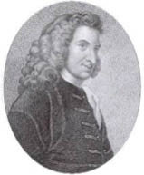

(1707 – 1754)

İngiliz edebiyatında gerçekçiliğin kurucularından olan yazar Henry Fielding önceleri tiyatro yazarı olarak ünlendiyse de iktidarı eleştiren oyunları yüzünden oyun yazmayı bırakmak zorunda kalınca romana yöneldi ve dünya edebiyatı büyük bir romancı kazanmış oldu. Yazarın "Tom Jones" adlı romanı İngiliz edebiyatında bir dönüm noktası kabul edilmektedir.
İngiliz romanının ilk önemli adlarından biri olan Henry Fielding (okunuşu: Henri Fiyılding) 22 Nisan 1707'de Somerset'te doğdu. Soylu bir aileden gelen yazarın babası Denbigha Kontu'nun yeğeniydi, annesi ise geçmişinde birçok avukat bulunan bir sülaleye mensuptu. Fielding ailesinin Dotset'teki çiftliğinde yetişti, ancak annesinin ölümü üzerine yeniden evlenen babası Samuel'i Britanya'nın en saygın okullarından biri olan Eton College'a gönderdi. 1719-24 yılları arasında burada kalan yazar birçok soylu ailenin çocuklarıyla arkadaşlık kurdu ve eski Yunan ve Roma edebiyatlarına büyük ilgi duydu.
Kuzeni Lady Mary Wortley Montagu tarafından yüreklendirilen Fielding yazarlık kariyerine Londra'da başladı ve 1728 yılında iki tiyatro oyunu yazdı. Oyunları ilgi görmeyince Hollanda'ya gidip Leiden Üniversitesi'nde klasik edebiyat üzerine araştırmalar yaptı. Britanya'ya döndükten sonra ise kendini tamamen oyun yazarlığına verdi. "Sciblerus Secundus" takma adını kullandı ve yazdığı güldürü-yergi oyunlarıyla bu sefer büyük bir ilgi gördü. Little Theatre adında bir tiyatronun başına geçti ve 1730'dan itibaren dört oyun sahneye koydu. Bunlardan Tom Thumb çok büyük ilgi gördü ve yazar, birkaç yıl boyunca rahat ve zengin bir hayat sürdü.
Ancak yergi alanında yazan herkes gibi Fielding de kısa sürede yönetimin tepkisini çekti ve başbakan tarafından yapılan bir uyarıyla tiyatro kariyerine son verildi. Hayatını yazarak sürdürmekte kararlı olan Fielding, bu kez de Champion adlı muhalif bir dergide yazılar yazmaya başladı. Sonunda 1740 yılında hapse atılan Fielding sağlığının bozulmaya başladığını görünce kendine başka yollar aramaya başladı.
1729-37 yılları arasında yirmi beş oyun yazan ve büyük paralar kazanan Fielding, asıl şöhreti romanlarıyla sağladı. Bugün İngiliz dilinin klasiklerinden kabul edilen Tom Jones'un Hikayesi (1749), Joseph Andrews'un Maceralarının Hikayesi (1742) ve Samuel Richardson'ın Pamela (1740) romanının parodisi olan Shamela (1741) gibi romanları yazdı.
Evliliğe karşı olmasıyla tanınan yazar 1734 yılında Charlotte Cradock'la evlendi ve karısı son romanı Amelia'nın (1751) başkarakterini yaratmada ona esin kaynağı oldu. Çiftin bir kızı ve bir oğlu oldu, fakat Charlotte 1744 yılında ölünce Fielding'in iç dünyası alt üst oldu. Ancak yazar üç yıl sonra altı aylık hamile hizmetçisi Mary Daniel'le evlenince bu sefer ortalık ayağa kalktı.
Kendisine tiyatroyu yasaklayan başbakanın iktidardan düşmesi üzerine Fielding için yine güzel günler başladı ve yazar, 1748 yılında "asayişi sağlama" görevine getirildi. Bu görev için o zamanlar maaş verilmiyordu ve elbette görevi seven de çok değildi, ama Fielding yanına aldığı üvey kardeşi ve yakın arkadaşlarıyla birlikte iyi çalıştı ve maaşlı bir polis birimi kurdu. Bu birim, bugün de İngiliz polisinin gözbebeği olan Scotland Yard'ın temeli oldu. Adaleti sağlama görevinde olmasına rağmen Fielding, bir sanatçı olarak suçluların halka açık yerlerde idam edilmesini engelleme yönünde çalışmalar da yaptı.
İlerleyen yıllarda sağlığı bozulan yazar, koltuk değnekleri kullanmak zorunda kalsa da o dönemdeki eşi Margaret Collier ve kızlarından biriyle Portekiz'e bir de yolculuk yaptı. Henry Fielding 8 Ekim 1754'te Portekiz'in Lizbon kentinde öldü. Bu zor yolculuğu anlattığı anı kitabı Lizbon'a Yolculuğun Kitabı ölümünden sonra, 1755'te Britanya'da yayımlandı.
Seçme Yapıtları: The History of the Adventures of Joseph Andrews and his Friend, Mr. Abraham Abrams, (1742), The Life and Death of Jonathan Wild, the Great (1743), A Journey from this World to the Next (1743), Tom Jones (1749)